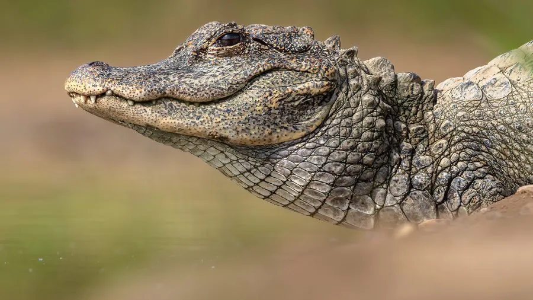

爬行动物 · 动物界
扬子鳄 Alligator sinensis

中国特有的小型鳄类，古称“鼍”，成年体长约 1.5–2 米，是现存体型最小、也最濒危的鳄类之一。
- 分类
- 门脊索动物门纲爬行纲目鳄目科短吻鳄科属短吻鳄属
- 栖息环境
- 长江下游的淡水池塘、沼泽、缓流河湾与稻田沟渠
- 地理分布
- 中国安徽、浙江、江苏等长江下游地区，野生种群零星分布
- 保护级别
- IUCN 极危（CR）；中国国家一级保护动物
物种志
扬子鳄体形短小粗壮，头骨扁平，吻部短而钝，背面覆盖成行的角质鳞片，呈暗褐色或灰褐色，腹面灰白，四肢短健，尾侧扁而有力。它是中国特有的鳄类，古称“鼍”，民间又叫“土龙”，化石记录可追溯到数千万年前，被视为鳄类中的“活化石”。
野生扬子鳄栖息于长江下游的池塘、沼泽与稻田沟渠，多在夜间活动，捕食鱼、虾、螺、蛙及水生昆虫，冬季掘洞休眠。每年 6–7 月交配，雌鳄用植物枝叶堆筑巢穴，产卵约 10–30 枚，靠巢材自然发酵的温度孵化，幼鳄出壳后由母鳄照料。由于湿地围垦与非法捕猎，野生种群一度不足 200 条；中国自 20 世纪 80 年代起开展人工繁育与放归，安徽宣城、浙江长兴等地建立了保护区。
形态与习性
- 食性鱼、虾、螺、蚌、蛙类及水生昆虫，也捕食小型鸟类
- 体长成年约 1.5–2.1 m，雄性略大于雌性
- 体重约 30–45 kg
- 寿命野外可达 50 年以上
- 繁殖卵生，6–7 月产卵约 10–30 枚，孵化期约 60–70 天
- 活动节律夜行性，冬季掘洞冬眠
- 种群现状野生种群约 200 条，人工繁育个体已超万条
趣味知识
- 扬子鳄是现存体型最小的鳄类之一，成年个体全长通常不足 2 米。
- 它的洞穴常有两个出口，一个通向水面，一个通向岸上，便于隐蔽出入。
- 幼鳄出壳时会发出叫声，母鳄闻声掘开巢穴并护送它们下水。